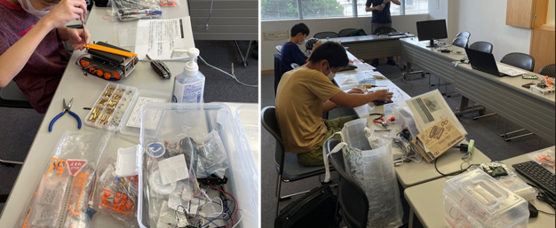

電子工作は少人数で。みんなはオンライン開催で。
しばらく会場開催を継続していました。コロナ第７波の感染が身近に迫るため急遽、会場開催は中止してオンライン開催とするため、少しでも会場の雰囲気を再現しようとCoderDojo青梅では初めてのギャザー・タウンのオンライン開催を試みました。
ギャザー・タウンを試したところ、RPGのような遊び心満載なのでプログラミングをそっちのけで会場探索をしてしまうのが難点だが、子ども同士でオンラインでも(むしろ会場よりも)仲良くなるきっかけを得られるのが利点だった。
会場申込をしていた４組のご家族には申し訳ありません。安心を最優先で急遽、オンライン開催とさせていただきました。前回の会場開催はニンジャ19名、オンラインでは半分の8名でした。
ほぼ毎月、Scratchワンポイント講座でScratchの機能を紹介しています。今月は「リスト」変数の使い方。早速、興味をもってもらい「リスト」を使った作品を発表してくれました。
会場レイアウトはグループ作業ともくもく机などを大学生メンターが用意してくれたので、ニンジャのみなさんは好きな場所を選んで楽しんでいました。
電子工作の部は前日土曜日に学習室で少人数で開催。ラズベリーパイを搭載したキャタピラ駆動のタンクを作っています。モーターやキャタピラは自宅ワークをしてもらって、当日は午前・午後合わせて4時間を使い切っても完成まではまだまだ時間が足りないけど、４時間たっぷりと飽きることなく集中してがんばっていました。

Gather Townの発表会場に全員集合!! よく見るとテーブル席にあふれて座れないメンターに壁側の臨時パイプ椅子を即席で用意、すごいぞ大学生メンター。そして発表者は登壇席の左側に列をつくって並んで発表を待つというルールで、順番に作品を発表してくれました。
次回は9月11日(日)です。